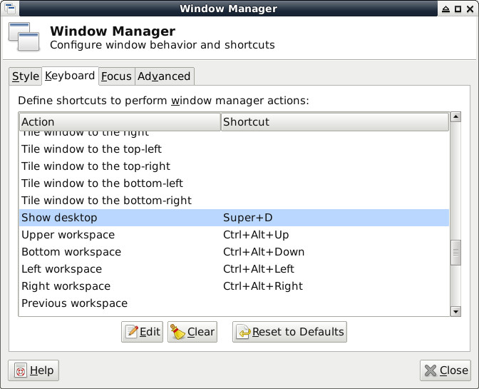
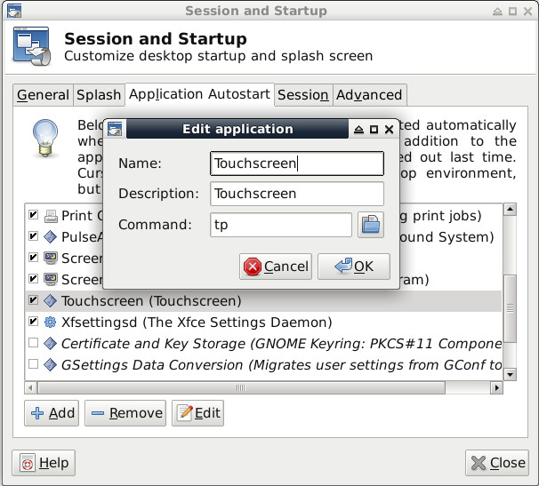

安裝步驟：
1. 下載Debian 11.0 ISO並且制作USB開機片
2. 接著透過USB開機(Fn + F7)並按照一般安裝步驟就可以安裝完成
3. 其它設定、安裝(先透過其它USB網卡上網安裝)
$ sudo vim /etc/X11/xorg.conf.d/20-gpudriver.conf
Section "Device"
Identifier "Intel Graphics"
Driver "intel"
Option "TearFree" "true"
EndSection
$ sudo vim /etc/X11/xorg.conf.d/40-monitor.conf
Section "Monitor"
Identifier "LVDS-0"
Option "Rotate" "right"
EndSection
$ sudo apt-get update
$ sudo apt-get install wpasupplicant network-manager-gnome firmware-brcm80211 firmware-intel-sound
$ sudo nano /etc/default/grub
GRUB_CMDLINE_LINUX="fbcon=rotate:1"
$ sudo grub-mkconfig -o /boot/grub/grub.cfg
P.S. 目前亮度無法調整，因為沒有intel_backlight可以控制
Win + D顯示桌面：
Application => Settings => Window Manager


#!/usr/bin/python
import os
import sys
path = '/tmp/x.log'
os.system('xinput --list > ' + path)
f = open(path)
c = f.readlines()
f.close()
for x in c:
if ('Goodix Capacitive TouchScreen' in x) == False:
continue
r = x.split('id=')[1]
nid = (r.split('\t')[0])
cmd = "xinput -set-prop " + str(nid) + " 'Coordinate Transformation Matrix' 0 1 0 -1 0 1 0 0 1"
print cmd
os.system(cmd)
break;